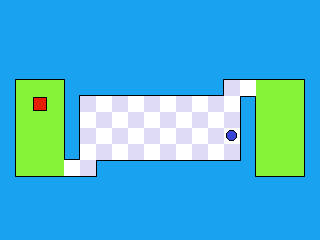

Navy Buffalo - Relazione
Indice
Descrizione gioco

Navy Buffalo è un gioco arcade ispirato a The World's Hardest
Game,
gioco 2D sviluppato nel Marzo 2008 da Snubby Land, in cui il giocatore nel controllare i
movimenti
di un quadrato deve risolvere una serie di "puzzle" evitando i nemici.
Prendendo spunto da questo gioco, Navy Buffalo è un gioco arcade in cui il giocatore
controllando
un cubo deve accumulare il maggior numero di punti
(identificati da
delle sfere) evitando i nemici (identificati da dei
cilindri) che potrebbero apparire con l'avanzare della
partita.
Per dare un tocco di originalità al gioco, viene introdotta la possibilità di raccogliere
buff e debuff, che
permettono di
ottenere un vantaggio o un svantaggio in base alla situazione.
Rispetto al gioco originale, Navy Buffalo azzera la componente "puzzle" e si concentra nel
proporre
una sfida di velocità e precisione in un ambiente 3D.
Descrizione del funzionamento del gioco
Il gioco ad inizio di ogni partita si presenta con la seguente struttura:
- Il giocatore è rappresentato da un cubo posizionato al centro della mappa.
- Una sfera di colore verde rappresenta l'oggetto da raccogliere per ottenere punti.
- Una serie di cubi di colore verde rappresentano i buff/debuff che possono essere raccolti per ottenere vantaggi/svantaggi.
Fino a quando il giocatore non compie alcuna azione il cubo rimane fermo al centro della mappa e
risulta essere inattivo (trasparenza attiva),
appena il giocatore compie un movimento il cubo cambia il suo stato e diventando attivo
(trasparenza non attiva).
Quando il cubo è attivo il giocatore può muoverlo sfruttando i controlli WASD o i bottoni
presenti a destra della schermata di gioco e
può raccogliere gli elementi presenti nella mappa.
La raccolta avviene quando il giocatore collide con un oggetto ed in base al tipo di oggetto
raccolto si ottengono effetti differenti:
- Se il giocatore raccoglie una sfera di colore verde ottiene punti, dopo la raccolta la sfera viene spostata in una posizione casuale.
- Se il giocatore raccoglie un cubo di colore verde ottiene un buff alla velocità di movimento, dopo la raccolta il cubo viene spostato in una posizione casuale e viene scelto randomicamente se il cubo sarà un buff o un debuff.
- Se il giocatore raccoglie un cubo di colore rosso ottiene un debuff alla velocità di movimento, dopo la raccolta il cubo viene spostato in una posizione casuale e viene scelto randomicamente se il cubo sarà un buff o un debuff.
Con il progredire della partita vengono aggiunti alla mappa dei cilindri di colore rosso che rappresentano i nemici che il giocatore deve
evitare,
se non vuole perdere la partita.
I nemici si muovono lungo direzioni facilmente intuibili, ma che possono variare in base alle
collisioni con gli altri elementi presenti nella mappa, come ad esempio i buff/debuff.
Sviluppo
Il progetto è stato realizzato per il corso di Computer Graphics del CdL Magistrale in
Informatica (curriculum A) presso l'università di Bologna.
Sulla base di quanto esposto nella sezione precedente, il progetto è stato sviluppato cercando
di rispettare le seguenti milestone:
- Implementazione di un sistema di inserimento di elementi nella scena.
- Implementazione di un sistema di render della scena.
- Implementazione di un sistema di movimento della camera.
- Implementazione di un sistema di movimento del giocatore ed dei restanti elementi.
- Implementazione di un sistema di collisione.
- Implementazione di un sistema di generazione di elementi casuali.
- Implementazione logica del gioco.
- Implementazione di un sistema di buff e debuff.
- Test del gioco da parte di un gruppo di utenti.
Per lo sviluppo del progetto, come da richiesta non sono state utilizzate librerie non viste a lezione come Three.js, ma sono state utilizzate le seguenti tecnologie:
Linguaggi di programmazione- Javascript (ES6)
- Html 5
- Tailwind CSS 3.1.8
- Blender 3.3.0
Nelle seguenti sezioni verranno descritte le varie parti del progetto, con particolare attenzione alle parti più complesse.
Struttura progetto
Per la realizzazione del progetto, si è cercato di utilizzare un approccio il più modulare
possibile, andando
di fatto a definire una serie di classi e di relativi oggetti che si occupano di una specifica
funzione.
La struttura del progetto è la seguente:
Nello specifico le differenti interagiscono secondo il seguente schema:
Descrizione main
Il file main.js rappresenta il puntod di partenza del codice per la creazione del gioco.
Mediante tale file vengono inizializzate le diverse componenti e vengono lanciati gli script
necessari per il corretto funzionamento del gioco.
Nello specifico vengono effettuate le seguenti operazioni:
- Inizializzazione della scena con l'inizializzazione degli elementi caratterizzanti (identificativo, percorso del modello, impostazioni di render, etc.) di ogni singolo oggetto che dovrà essere renderizzato
- Inizializzazione del meccanismo di rendering di cui è incaricato il file Core.js
- Inizializzazione dei diversi agenti che si occupano di gestire le diverse funzioni del gioco (gestione della camera, gestione delle collisioni, gestione del player, etc.)
- Caricamento dei diversi modelli necessari per la creazione del gioco
- Avvio del ciclo di rendering
Descrizione core system
Il file Core.js si occupa di gestire il meccanismo di rendering ed aggiornamento delle informazioni del gioco, in particolare:
- Inizializzazione dei programmi GLSL per l'elaborazione dei vertex-shader e dei fragment-shader
- Inizializzazione dei canvas di rendering
- Mantenimento del ciclo di rendering
In particolare per il corretto funzionamento del gioco si è deciso di implementare il seguente ciclo di aggiornamento delle informazioni di gioco e di rendering del gioco.
Descrizione agent system
Gli agenti sono i componenti che si occupano di gestire le diverse funzioni del gioco.
Per lo sviluppo del gioco sono stati implementati i seguenti agenti:
- CameraAgent.js
- CollisionAgent.js
- PlayerAgent.js
CameraAgent.js
Il CameraAgent.js si occupa di gestire la camera di gioco, la quale è stata studiata per
muoversi
lungo la superficie di un'ipotetica sfera che racchiude l'arena di gioco.
L'utente attraverso i controlli implementati è in grado di spostare la camera e di conseguenza
la vista del gioco.


Rispetto a quando richiesto dalle specifiche del progetto, il movimento della camera è stato
progettato per essere fruibile attraverso diversi dispositivi come tastiera e touch.
Infatto sono stati implementati i diversi listener per la gestione dei diversi eventi, come
ad esempio touchstart, touchend , touchmove, keydown, keyup e
diversi bottoni di richiamo.
Da notare che per gli eventi di tipo touch è stato implementato un sistema di rilevamento
del pich-in e del pinch-out per lo zoom della camera.
CollisionAgent.js
Il CollisionAgent.js si occupa di gestire le collisioni tra gli oggetti presenti nel gioco.
Per lo sviluppo del gioco è stato implementato un sistema di collisioni basato su un sistema di
mapping tra la rappresentazione 3D e una ipotetica rappresentazione 2D. Sulla base di questo
mapping è
possibile determinare se due oggetti si sovrappongono o meno attraverso una serie di funzioni di
appoggio.
Nello specifico sono state implementate le seguenti funzioni di appoggio:
- checkOverlapCircleSquare(...), funzione che determina se un cerchio e un quadrato si sovrappongono.
- checkOverlapSquareSquare(...), funzione che determina se due quadrati si sovrappongono.
- checkOverlapCircleCircle(...), funzione che determina se due cerchi si sovrappongono.
Tutte le funzioni sopra elencate necessitano delle informazioni relative alla posizione del
centro del
oggetto e delle sue dimensioni (raggio o dimensione lato).
PlayerAgent.js
Il PlayerAgent.js si occupa di gestire il movimento del giocatore.
Il sistema di movimento è stato pensato per impedire il più possibile il movimento del giocatore
lungo l'asse verticale ed orizzontale. Infatti tali assi di movimento sono disponibili solo ad
inizio partita e solo se il giocatore decide di muoversi lungo i limiti dell'arena di gioco.
Rispetto a quando richiesto dalle specifiche del progetto, il movimento del giocatore è stato progettato per essere fruibile attraverso diversi dispositivi come tastiera e touch. Infatto sono stati implementati i diversi listener per la gestione dei diversi eventi, come ad esempio touchstart, touchend , keydown e keyup.
Descrizione object behaviour system
Ogni oggetto del gioco è caratterizzato da un comportamento che ne determina il suo
funzionamento.
Di base ogni oggetto eredità una serie di funzionalità e caratterische dalla classe
ObjectBehaviour.
Le classi che estendono ObjectBehaviour sono le seguenti:
- PlayerBehaviour.js, caratterizzato da una serie di funzioni per il meccanismi di movimento e di gestione e di reset della posizione.
- EnemyBehaviour.js, caratterizzato da una serie di funzioni per il meccanismi di movimento, di rimbalzo e di generazione.
- PointBehaviour.js, caratterizzato da una serie di funzioni per il meccanismi di animazione e generazione della posizione.
- ModifierBehaviour.js, caratto da una serie di funzioni per il meccanismi di variazione del proprio stato (buffer o debuffer) e generazione della posizione.
Rispetto a quanto detto gli aspetti più interessanti riguardano gli effeti di trasparenza
e di animazione.
Transparenza
In molte delle classi è stato utilizzato il sistema di gestione della trasparenza in diversi
modi.
Per esempio, in EnemyBehaviour.js, è stato utilizzato il sistema di trasparenza per gestire il
meccanismo di generazione degli oggetti (spawning routine) oppure per l'identificazione dello
stato del giocatore nel PlayerBehaviour.js.
In tutti questi casi è stato utilizzato il sistema di gestione della componente alpha del colore
(RGBA), la quale può assumere un valore compreso tra 0 (oggetto completamente invisibile) e 1
(oggetto completamente visibile).
Di base il buffer alpha è allocato autonomamente, per abilitarlo e permettere la gestione della
componente alpha del colore, è necessario chiamare la funzione enable(gl.BLEND) sul
contesto 3D (ovviamente per riportare la situazione a quella iniziale è necessario chiamare la
funzione disable(gl.BLEND)).
Per gestire la componente alpha del colore è stato utilizzato il sistema di gestione degli
shader, in particolare il fragment shader, al quale è stato aggiunto l'attributo "uniform float
uAlpha", utile per passare il valore alpha del colore del pixel. Una volta aggiunto l'attributo,
è stato necessario modificare il codice del fragment shader, in particolare la funzione main, in
modo da moltiplicare il colore del pixel per il valore di alpha e passarlo al colore del pixel.
Attraverso la funzione di render del contesto 3D è stato possibile passare il valore di alpha al
fragment shader ed ottenere il risultato desiderato.
NOTA: Per permettere una corretta gestione della trasparenza è stato necessario
modificare l'ordine di render dei vari oggetti. In modo da renderizzare prima gli oggetti con
alpha maggiore e poi quelli con alpha minore.
Animazione
Dal punto di vista tecnico, molte classi utilizzano il sistema di animazione per gestire
il movimento degli oggetti, ma solo la classe PointBehaviour.js utilizza il sistema di
animazione per gestire l'animazione di inattività (idle animation).
Nel gestire il movimento si è ragionato nello sfruttare al meglio il calcolo del tempo
della funzione di render del contesto 3D. Utilizzando tale valore è stato possibile
ottenere un movimento fluido e continuo attraverso l'applicazione di una funzione periodica
come la funzione seno.
Per gestire la rotazione dell'oggetto è stato necessario utilizzare la matrice di rotazione
per il calcolo della nuova posizione dell'oggetto.
Texture alternative
Menzione speciale va fatta per la funzionalità di texture alternative. Questa funzionalità
consente di cambiare la texture di un oggetto in base allo stato di una checkbox.
L'implementazione di questa funzionalità è stata fatta attraverso una ricarica dei diversi
oggetti con un cambiamento nella texture di riferimento.